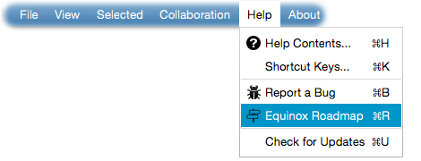
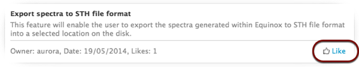

Equinox roadmap
The roadmap is designed to collect user feedback and wishes in order to determine development priorities.
You play a key role in the development process. Your wishes and votes will determine which new features will be added to Equinox. Click - Equinox Roadmap
from
the Help menu as shown in the following figure.
If you have an idea or a feature that you would like to see it implemented into Equinox, simply send the - title
and optionally - description
. Once you submit
your wish, it will be immediately available for everyone to vote for it.
All current new feature proposals are listed on the right side panel. You can vote for a feature by clicking the - Like
button located at the bottom-right
corner of each wish as shown in the following figure.